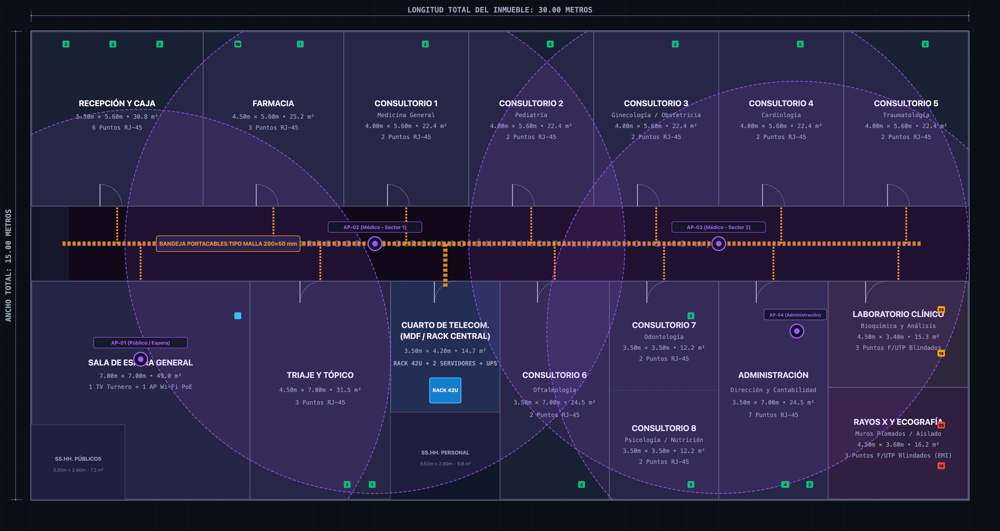
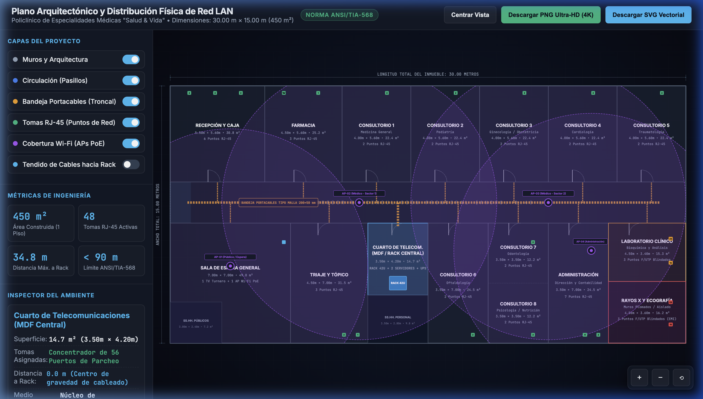

Defensa Técnica • Unidad I • Redes de Computadoras I
Diseño de Infraestructura Física y Cableado Estructurado LAN
Policlínico de Especialidades Médicas «Salud & Vida S.A.C.»
ANSI/TIA-568-C.2
ANSI/TIA-569-D
ANSI/TIA-606-B
IEEE 802.3ab / ax
Docente: Mg. REYNALDO ALFONTE ZAPANA
•
Escuela de Ingeniería en Informática y Sistemas (ESIS)
•
Tacna, Perú
Diagnóstico Situacional
El Problema Físico: Caos Operativo en Salud
Vulnerabilidad de datos clínicos en infraestructura precaria
Infraestructura Encontrada (Fallas Críticas)
-
Cables Cat 5e en piso: Tendidos sin canalización, expuestos al tránsito de camillas y personal.
-
Mini-switches en cascada: Tormentas de broadcast y cuellos de botella constantes en horas punta.
-
Interferencia EMI en Rayos X: Datos corrompidos por descargas de 100 kV de equipos electromédicos.
100 Mbps
Límite Cat 5e (IEEE 802.3u)
100 MHz
Ancho de banda Cat 5e (TIA-568)
Solución de Ingeniería Proyectada
-
100% Canalizado por techo: Bandeja tipo malla aérea en pasillo + canaleta PVC de dos vías en muros.
-
Centralización en Rack 42U: Cuarto MDF cerrado, climatizado y con respaldo UPS Online 3kVA.
-
Blindaje F/UTP Cat 6A: Pantalla electromagnética ≥ 40 dB en salas de diagnóstico crítico.
< 1.2 s
Apertura estudio DICOM
1000 Mbps
Gigabit garantizado
Requerimientos de Infraestructura
Dimensionamiento Racional: 450 m² y 56 Tomas
Distribución por áreas funcionales y densidad de puestos
Matriz de Distribución por Zonas
| Zona Hospitalaria | Ambientes | Tomas | Tipo Cable |
|---|---|---|---|
| Atención y Espera | Recepción, Sala Espera, Triaje | 11 Tomas | UTP Cat 6 |
| Consulta Externa | Consultorios C-01 al C-08 | 16 Tomas | UTP Cat 6 |
| Zona Crítica EMI | Rayos X y Lab. Clínico | 6 Tomas | F/UTP Cat 6A |
| Administración | Jefatura, Contab., Farmacia | 10 Tomas | UTP Cat 6 |
| Equipos Activos | 4 APs Wi-Fi 6 + Servidores | 13 Tomas | UTP / F-UTP |
Criterios de Ingeniería Aplicados
-
Regla de 2 tomas mínimas (TIA-568): Cada puesto cuenta con 1 punto de datos para PC y 1 para impresora o reserva de VoIP.
-
Reserva técnica del 15%: 8 puntos distribuidos para futuras cámaras IP o telemedicina sin obras civiles adicionales.
-
Zonificación médica: Flujo público al ingreso (Oeste) y zona diagnóstica restringida al fondo (Este).
450 m²
Planta única (30x15m)
56 Pts
Jacks RJ-45 certificados
Análisis de Carga de Red
Perfil de Tráfico: EMR Ligero vs. Ráfagas DICOM
Comportamiento asimétrico de los flujos de datos en el policlínico
Tráfico EMR / Historias Clínicas (Texto / HL7)
- Patrón: Consultas constantes a base de datos PostgreSQL/MySQL.
- Sensibilidad: Requiere baja latencia (< 5 ms) y cero caídas de sesión.
- Suficiencia: Cable UTP Cat 6 cubre holgadamente esta demanda.
Tráfico Radiológico DICOM (PACS / Imágenes)
- Patrón: Ráfagas de 120 MB inmediatamente tras disparar el Rayos X.
- Riesgo crítico: Si el enlace se degrada a 100 Mbps, el visor tarda 15 a 30 seg.
- Exigencia: Enlace apantallado a 1 Gbps / 10 Gbps directo al servidor PACS.
Diseño Topológico
Decisión 1: Estrella Jerárquica Colapsada
Centralización en Rack 42U con uplinks SFP+ de 10 Gbps
Por qué Estrella Colapsada
-
Aislamiento de fallas por puerto: Un corte de cable en un consultorio no afecta a los demás ambientes.
-
Descarte de Bus y Anillo: Topologías obsoletas que sufren de colisiones masivas y colapso de toda la red ante una sola rotura.
-
Dos capas en lugar de tres: Al tener 1 solo piso, una capa de distribución separada habría encarecido $3,500 USD sin beneficio técnico.
10 Gbps
Uplinks SFP+ DAC
100%
Switches PoE+ gestionados
Modelos de Referencia
Encapsulación: La Capa Física Sostiene la Red
Trayectoria descendente de un estudio DICOM desde Rayos X al Servidor PACS
CAPA 7, 6, 5 • APLICACIÓN
Estudio Radiológico DICOM (120 MB de imagen + metadatos)
CAPA 4 • TRANSPORTE (TCP)
Segmentación MSS = 1460 bytes • Puerto destino TCP/104 (DICOM Storage)
CAPA 3 • RED (IP)
Direccionamiento IPv4 • IP Origen: PC Rayos X → IP Destino: PACS
CAPA 2 • ENLACE (ETHERNET IEEE 802.3)
Cabecera MAC + Cola FCS CRC-32 (Detección rigurosa de errores de bit)
CAPA 1 • FÍSICA (4D-PAM5 EN COBRE)
Voltajes analógicos en 4 pares de cobre F/UTP Cat 6A apantallado
Impacto Clínico de la Capa Física
-
El riesgo del ruido: Si la Capa 1 no tiene blindaje, el ruido altera bits; la Capa 2 descarta la trama por fallo de CRC-32.
-
Colapso TCP: Al perderse tramas, la Capa 4 (TCP) entra en retransmisiones continuas y reduce la ventana de congestión.
-
Resultado garantizado: Con medio físico inmune, los 120 MB se transfieren en 1.12 segundos sin congelar el visor del médico.
1460 B
MSS estándar TCP
CRC-32
FCS de integridad
Medios de Transmisión
Decisión 2: UTP Cat 6 LSZH para el 85% de la Red
Rendimiento Gigabit a 250 MHz con bioseguridad hospitalaria
Por qué UTP Cat 6 LSZH
-
Cruceta plástica (Spline): Mantiene la separación física entre los 4 pares, reduciendo drásticamente la paradiafonía (NEXT).
-
Bioseguridad LSZH (Low Smoke Zero Halogen): En caso de incendio, no propaga llama ni emite gases halógenos tóxicos que asfixien a los pacientes.
-
Descarte de FTTD (Fibra al escritorio): Para distancias menores a 35 m, la fibra encarece el proyecto en 250% sin aportar ventajas de velocidad.
250 MHz
Ancho de banda Cat 6
1000 Mbps
Velocidad garantizada
Física de Comunicaciones
Decisión 3: F/UTP Cat 6A Blindado en Rayos X y Lab
Fundamentación matemática mediante el Teorema de Shannon-Hartley
Fundamento Matemático
C = B · log2(1 + S / N)
Si el ruido electromagnético (N) crece por descargas de 100 kV, la relación S/N se desploma y la capacidad del canal (C) cae.
Protección Contra Descargas de 100 kV
-
Pantalla de aluminio (Foil): Envuelve los 4 pares actuando como una jaula de Faraday continua.
-
Atenuación EMI ≥ 40 dB: Desvía la interferencia parásita hacia el hilo de drenaje conectado a la tierra TMGB.
-
Categoría 6A (500 MHz / 10 Gbps): Prepara el canal para el nuevo equipamiento de Tomografía Axial Computarizada (TAC).
≥ 40 dB
Aislamiento de ruido
500 MHz
Ancho de banda Cat 6A
Infraestructura Física
Decisión 4: Bandeja Aérea y Canaleta de Doble Vía
Diseño bajo estándar ANSI/TIA-569-D para ocupación y separación
Bandeja Malla en Pasillo (200×50 mm)
- Falso techo a +2.75 m: Suspensión mediante varillas roscadas de 3/8".
- Ventilación natural: La malla no retiene polvo y disipa calor de cables PoE+.
Canaleta de Pared PVC (40×25 mm)
- Tabique separador físico: Aísla campos inductivos de la corriente alterna de 60 Hz.
- Radio de curvatura ≥ 4xOD: Curvas moldeadas de fábrica para evitar quiebres.
Topografía y Distancias
Decisión 5: Cuarto MDF en el Centro de Gravedad
Optimización de longitudes y cumplimiento holgado de la norma TIA-568
Margen Normativo de Seguridad
-
Límite TIA-568: 90.0 metros estrictos para el enlace permanente.
-
Enlace más lejano medido: 34.80 metros (Laboratorio Clínico en el extremo este).
-
Margen de seguridad: +55.20 metros (61.3% por debajo del límite máximo).
-
Ahorro económico: La posición central ahorró más de 650 metros de cable frente a ubicar el rack en una esquina.
34.8 m
Toma más lejana
90.0 m
Tope norma TIA
Gabinete Central
Decisión 6: Elevación Modular del Rack 42U
Distribución tipo sándwich para ordenamiento y flujo térmico óptimo
Criterios de Ordenamiento y Energía
-
Topología tipo sándwich: Patch panels directamente sobre los switches; permite usar latiguillos cortos de 1 metro eliminando cruzaderas.
-
UPS Online Doble Conversión (3 kVA): Entrega onda senoidal pura sin microcortes de conmutación (0 ms de transferencia).
-
Puesta a tierra TMGB (TIA-607): Barra de cobre en la base conectada al pozo a tierra (≤ 5 Ω).
42 U
Altura gabinete 19"
45 min
Autonomía UPS Online
Diseño Civil
Decisión 7: Distribución Física de Ambientes
Plano arquitectónico civil a escala 1:100 (450 m²)

Ingeniería de Planta
Decisión 8: Plano Integral de Red y Canalizaciones
Rutas de bandeja aérea, tomas RJ-45 y acometidas al Rack MDF

Conectividad Inalámbrica
Decisión 9: 4 Access Points Wi-Fi 6 (802.11ax)
Celdas de 8 metros en 5 GHz con 15% de solapamiento para Fast Roaming
Por qué AP-01 en Sala de Espera
-
Pico de concurrencia: La Sala de Espera concentra hasta 35 personas. Requiere su propio AP para no saturar la red médica.
-
Fast Roaming (802.11r/k/v): 15% de solapamiento entre celdas; un médico con tablet camina por el pasillo sin corte de sesión.
-
Aislamiento estricto de SSIDs: Red de pacientes aislada en VLAN separada con ancho de banda limitado a 5 Mbps.
≥ -65 dBm
RSSI borde de celda
15%
Solapamiento roaming
Aseguramiento de Calidad
Decisión 10: Certificación Metrológica TIA-568-C.2
Parámetros de radiofrecuencia a 250 MHz medidos con Fluke DSX-8000
Parámetros Críticos de Certificación
| Parámetro RF | Límite Cat 6 (250 MHz) | Causa Típica Falla |
|---|---|---|
| Wire Map | Continuidad 1:1 directa | Corte de hilo / Error pinout |
| Longitud (TDR) | ≤ 90.0 m (Medido: 34.8m) | Tirada excesiva de cable |
| Atenuación (IL) | ≤ 31.1 dB | Cable CCA o longitud |
| NEXT (Paradiafonía) | ≥ 35.3 dB | Destrenzado > 13 mm |
| Return Loss | ≥ 10.0 dB | Radio curvatura < 4xOD |
Enlace Permanente vs. Canal Completo
-
Enlace Permanente (90 m máx): Evalúa solo el tendido fijo (IDC patch panel a Keystone de pared). Es la prueba de entrega de obra civil.
-
Canal Completo (100 m máx): Suma los latiguillos de ambos extremos. Es usado durante mantenimiento operativo.
-
Dictamen oficial: 100% de los 56 enlaces certificados en modelo de Enlace Permanente con garantía de 20 años.
100%
Reporte Pass / Fail
Nivel IIIe
Precisión instrumento
Diagnóstico Avanzado
Decisión 11: Por Qué el Tester de LEDs Engaña
El fenómeno electromagnético del Par Dividido (Split Pair)
Ruptura del Campo Balanceado
-
La trampa DC: Si mezclas hilos de pares distintos en ambos lados, la continuidad metálica existe (el LED enciende en verde).
-
Desastre en alta frecuencia: Se pierde la cancelación electromagnética por trenzado. La diafonía (NEXT) se dispara provocando 80% de pérdida de paquetes.
-
Dominio metrológico: Solo un certificador RF mide la respuesta en frecuencia y detecta el Split Pair.
< 15 dB
NEXT catastrófico
≥ 35.3 dB
Límite norma Cat 6
Cierre de la Propuesta
Presupuesto Consolidado y Muestra Física UTP
Inversión directa de suministros y evaluación individual ante el jurado
Resumen Económico del Proyecto (BOM)
| Partida Presupuestal | Monto USD | Monto PEN | % |
|---|---|---|---|
| P1: Cableado Pasivo | $2,208.00 | S/. 8,280.00 | 22.9% |
| P2: Canalizaciones y Tierra | $1,084.00 | S/. 4,065.00 | 11.3% |
| P3: Rack 42U y UPS 3kVA | $2,650.00 | S/. 9,937.50 | 27.5% |
| P4: Equipos Activos y APs | $3,690.00 | S/. 13,837.50 | 38.3% |
| TOTAL DIRECTO | $9,632.00 | S/. 36,120.00 | 100% |
$172 USD
Costo por punto completo
56 Puntos
Tomas certificadas
Muestra Física de Cable UTP (T568B)
-
Crimpeado T568B: 13-14 mm expuestos; chaqueta ingresa 6 mm dentro del cuerpo del conector para prensado mecánico.
-
Destrenzado ≤ 13 mm: Garantiza cumplimiento de NEXT a 250 MHz para Gigabit Ethernet.
-
Disponibilidad inmediata: Muestra física de cable y tester en mano para prueba práctica ante el docente.
¡Gracias por su atención!
Quedamos a disposición del jurado para la ronda de preguntas técnicas.
01 / 17
Pulsa 'F' para pantalla completa • Clic o → para avanzar